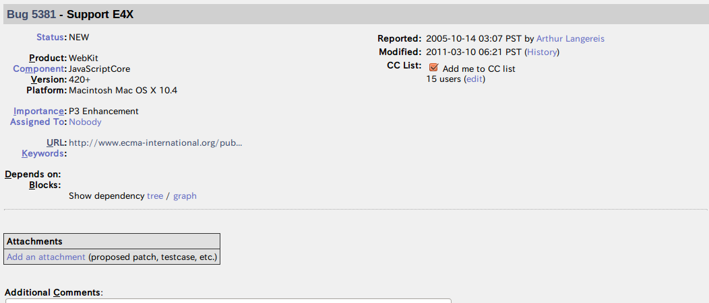

E4X
追悼E4X （仮)
E4X?
正式名称はECMAScript for XML
ECMA-357として標準化
ECMAScriptでXMLを簡単に扱う仕組み
実装処理系
SpiderMonkey
SpiderMonkey
Gecko 1.8.0 / Firefox 1.5でのサポート
Firefox 21で完全に削除
Rhino
Rhino
Rhino 1.6R1で実装
By BEA and AgileDelta

http://docs.oracle.com/javase/6/docs/technotes/guides/scripting/programmer_guide/index.html#jsengine
ActionScript (Adobe Flash)

ActionScript
ActionScript 3でサポート
Flash 9+
AIR 1.0+
JavaScript Core
V8
実装したエンジン
- Firefox/Gecko (SpiderMonkey)
- Rhino
- Flash/ActionScript
実装してない（しなかった)エンジン
- Chrome/V8
- WebKit/JavaScriptCore
- Internet Explorer
- Opera
時代背景
XHTML 1.0 (this specification) is the first document type in the XHTML family. It is a reformulation of the three HTML 4 document types as applications of XML 1.0 [XML]. It is intended to be used as a language for content that is both XML-conforming and, if some simple guidelines are followed, operates in HTML 4 conforming user agents. Developers who migrate their content to XHTML 1.0 will realize the following benefits:
- XMLはWebサービスで使われる重要なフォーマットだった
- HTMLもXHTMLに移行しようとしていた
BUT...
THEN...
The rationale: E4X has a standard, but is not part of the de facto open web: for a long time, it's implemented by only one browser, Firefox, and is not used for open web content. We are trying to advance SpiderMonkey and Firefox rapidly under intense competition, and keeping E4X slows down our development and increases the security attack surface.
https://groups.google.com/forum/#!topic/mozilla.dev.tech.js-engine/yYQyMCcMf-0/discussion
セキュリティバグ
E4Xの簡単な使い方
コンテンツ内で使う場合
<script type="text/javascript;e4x=1">
...
</script>XMLオブジェクトを作成
XMLコンストラクタの引数としてXMLを渡す
var a = new XML("<a></a>");XMLオブジェクトを作成
もっと簡単にリテラルを使う
var a = <a></a>;属性 (attribute)
要素の属性を設定
a.@type = "abc"要素属性を参照
a.@type子ノードへのアクセス
a.b.cまたは
a['b']テキストノード
a.text()XMLノード
a.toXMLString()すべての子ノード
a.*XMLListとして返る
XMLListの参照にfor each...in
for each (var childnode in a.b) {
}フィルタ
a.(@id == "abc")- クライアント側としては、いろいろなセキュリティ問題が発生しやすい
(ex. XML内にscriptが埋め込み可能) - JSONの登場
- サーバーサイドとしては、有益だったんじゃない？
node.js ?
Looks pretty neat. It'd be good if this functionality could be added directly to V8, but I've heard they aren't fond of implementing stuff that isn't part of the core standards.